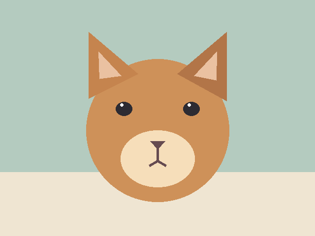

一张照片，一格一颗豆子。

拖入照片，或者从相册中选择。真实色号、用量图例，帮你直接开始拼。
准备好了，选择照片开始吧。
裁剪、框选主体，再用画笔修补边缘。
选择比例后拖动框选，再点击应用裁剪；抠图需框住完整主体。
选择整张图纸，或包含总图与各色号分色图的 ZIP。
整张图：包含所有颜色和色号图例。分色 ZIP：一张彩色总图 + 每个色号一张分色图；对应格子统一为黑色，保留色号与原图坐标。
手机浏览器会下载到“文件”或下载列表。
照片只在当前浏览器中处理，不发送到服务器。保存作品为 JSON 可在另一台设备打开继续编辑；不同设备之间不会自动同步。
复杂背景抠图后请检查边缘，必要时用保留 / 擦除画笔修补。增强无法恢复原图不存在的细节，色卡为社区参考值。
电脑快捷键：Ctrl / ⌘ + O 导入，S 保存，Z 撤销，Shift + Z 重做。